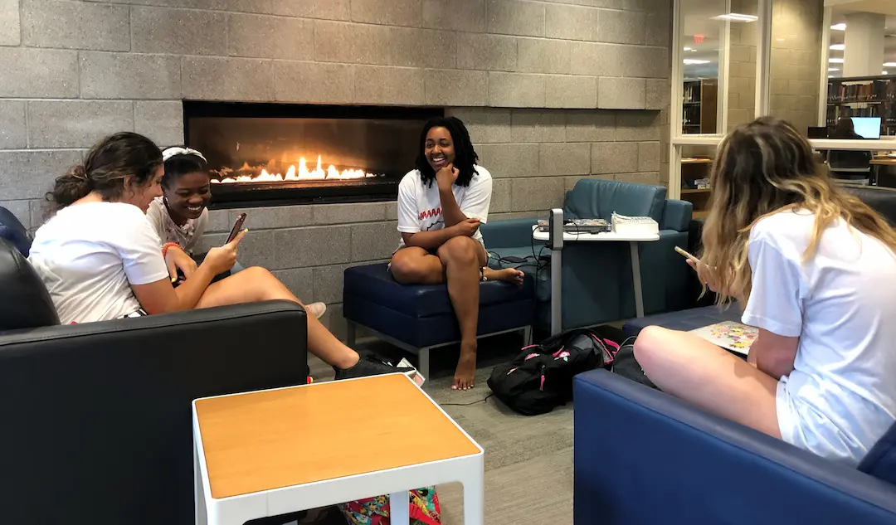
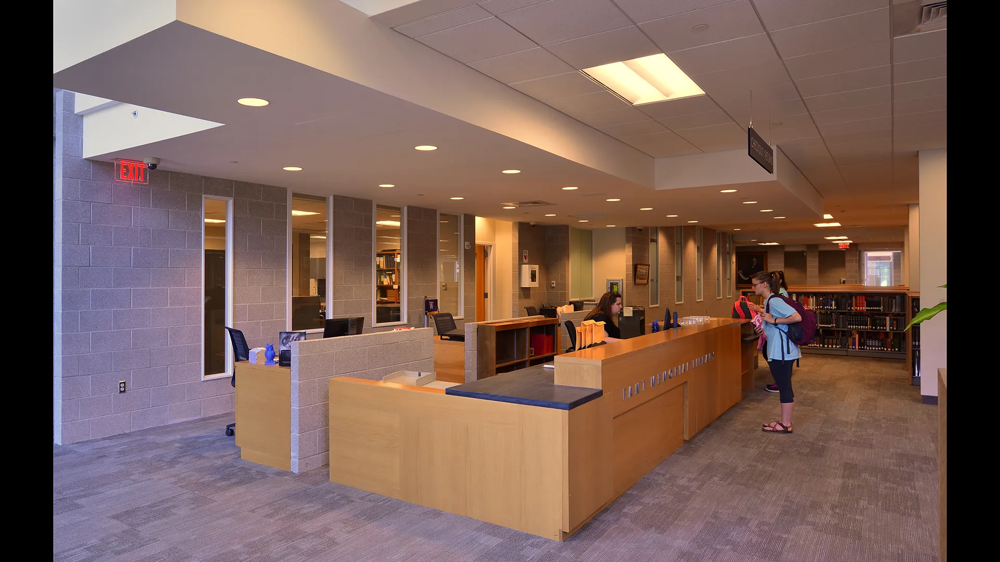
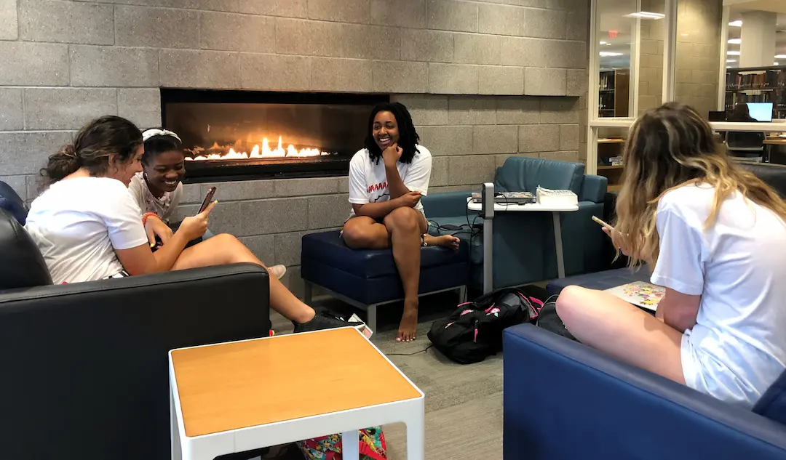
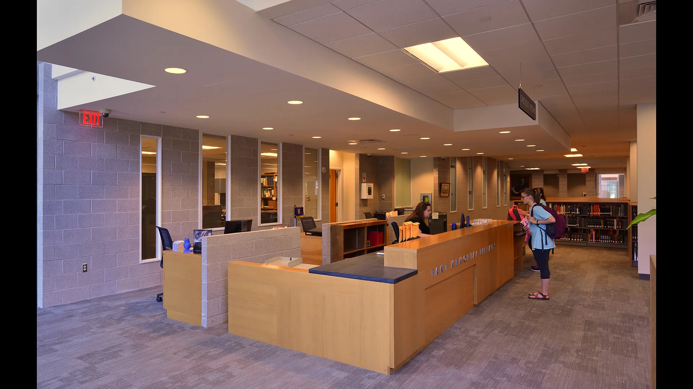

Fant Memorial Library Addition and Renovation
Conceived in 1967 as a blocky two story vault for many books and few people, the original Fant Library housed 400,000 volumes, packed high, wall-to-wall, both floors. Libraries transformed radically over fifty years, evolving into less paper, more tech, more people. And thus MUW’s campus requested such a radical transformation of its half-century library — dispersion of the book collection, allowing for a thinner, lighter, dynamic, populated, and collaborative environment. State-of-the-art lecture and conferencing facilities, study rooms, special collections, gathering/seating areas, and cybercafe were designed. The greatest design challenge was dispersion, yet retention, of the 400,000 volume collection, while adding 26,525 GSF of new classroom/conferencing spaces, with defined exterior usable space, all on a very constrained site. The solution involved construction of a 3-story, 300,000 capacity, automated storage/retrieval system to allow flexible rotation, and thinning, of the static bound collection. This concept allowed reduced height, and footprint, of traditional stacks, allowing multiple collaborative spaces throughout. The original stolid structure, with a new front facade encapsulating the original porch for seating and floating study rooms, is now pierced with window walls, clerestories, a central light-well, a reconstructed south wall with rhythmical windows that overlook a new sculpture courtyard for study and receptions, reconfigured staff area, extensive seating, study rooms, gallery, all-hours computer, archives, and reduced stacks. The new south addition, with glass connecting bridges, lecture/meeting/conference rooms, perched study rooms, and a cybercafe tightly pressing the street, encloses the main courtyard while leaving a small cafe courtyard between the new and existing structures. Circulation in the addition wraps the courtyard, weaving in and out of mass, offering dynamic, varied views and experiences of the courtyard. Interplay of light, form, materials, and multiple layers of transparency, and transformation into a lantern quality at night, results in a magnetic university campus hub.
 


